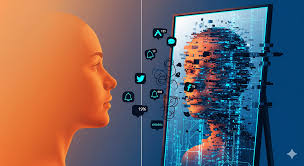
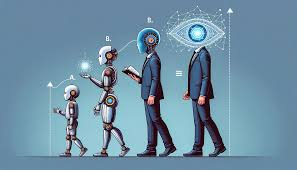

Abstract
The rapid proliferation of artificial intelligence (AI) has positioned it as a dominant force in shaping the future. However, viewing AI as an external challenge obscures its more crucial role: that of a sophisticated mirror reflecting the complex, often unflattering, image of humanity itself. By magnifying the data and decisions of our collective past, AI systems serve as brutally honest analysts of our existing social structures, revealing deep-seated biases, core anxieties about mortality, and fundamental shifts in human relational needs. The most critical lesson from AI is not about machine intelligence, but about the profound, unexamined truths of the human condition.
Introduction
The narrative surrounding artificial intelligence often casts it as an external force—an autonomous challenger, a harbinger of utopian efficiency, or a looming existential threat. Yet, a more profound understanding reveals that AI is less a foreign entity and more a sophisticated, high-definition mirror reflecting the complex, often unflattering, image of humanity itself. By magnifying the data and decisions of our collective past, AI systems serve not as innovators of new consciousness, but as brutally honest analysts of our existing social structures, biases, and anxieties. What we learn from AI is not about machine intelligence, but about the deeply ingrained and unexamined truths of the human condition.
The Reflection of Societal Bias
The most immediate and critical reflection AI offers is the amplification of human bias. When algorithms designed to optimize hiring, parole decisions, or loan applications produce discriminatory outcomes, the fault lies not in the silicon, but in the dataset. These systems are trained on historical records where racial, gender, and socioeconomic prejudices are already entrenched. The AI, in its pursuit of efficiency, simply learns to perpetuate these patterns perfectly. It holds up a mirror to the sociological past, demonstrating with mathematical clarity that systemic bias is not a relic but an active, measurable component of current societal function. The transparency of the machine’s flawed logic forces us to confront the opacity of our own moral and historical blind spots, demanding that we reform the inputs (our society) rather than merely debug the outputs (the code).

The Anxiety of Imperfection
Beyond structural failures, AI systems also reveal our deep-seated human anxieties. Our relentless pursuit of Artificial General Intelligence (AGI)—a machine capable of human-level cognitive function—is arguably driven by an uncomfortable recognition of our own biological limits. We seek to automate wisdom, outsource emotional labor, and delegate tasks that are tedious, dangerous, or emotionally taxing. In the medical field, we build AI diagnosticians not just for speed, but as a safeguard against human fallibility and exhaustion. The obsession with creating a digital successor reveals a fundamental human struggle with mortality and imperfection. By striving to build a machine that never sleeps, never forgets, and never dies, we are articulating our yearning for liberation from the messy, contingent boundaries of our own bodies and minds.
The Shifting Landscape of Connection
Furthermore, the proliferation of large language models and companion bots reflects a significant shift in the landscape of human communication and emotional need. As people turn to non-judgmental, endlessly available chatbots for conversation, planning, and even emotional comfort, the systems mirror deficiencies in contemporary human relationships. This trend is a sociological litmus test, showing a growing appetite for interaction that is predictable, tailored, and devoid of the friction inherent in human-to-human engagement. AI reveals a latent loneliness and an increasing preference for engineered empathy over spontaneous, difficult, yet ultimately authentic connection.

Conclusion
In conclusion, artificial intelligence is far more than a technological advancement; it is a moral diagnostic tool. It strips away the illusion of our progress and forces us to look squarely at the data we have generated, the values we prioritize, and the anxieties we harbor. The future of AI is intrinsically linked to the future of humanity, not because the machines will conquer us, but because they hold the capacity to expose our foundational faults. The critical challenge is not teaching AI to be more human, but rather using the mirror of AI to teach ourselves how to be better humans—by addressing the biases, mitigating the fears, and cultivating the authentic connections that the machine highlights by their very absence in its perfected, logical reflection.